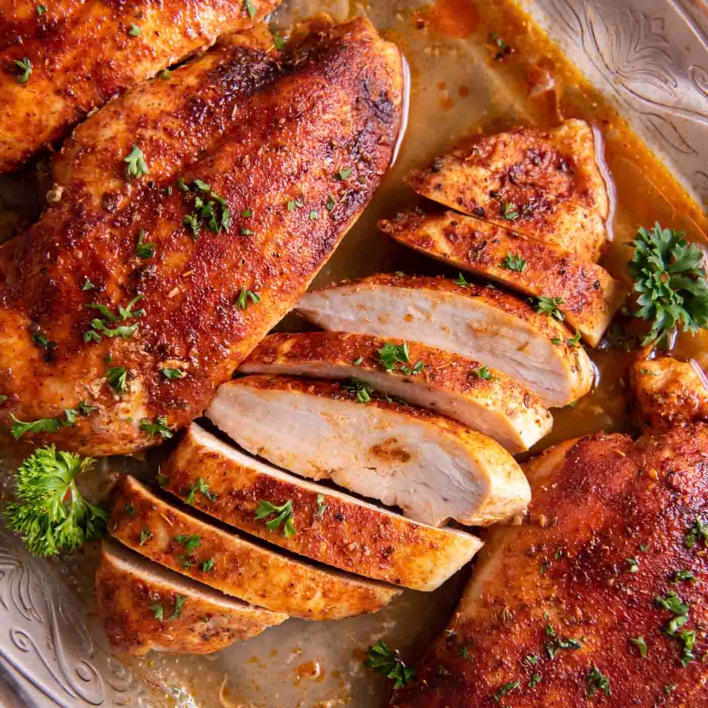

Baked Chicken Breasts

Description
This baked chicken breast recipe is simple, reliable, and always delivers juicy results. Perfect for quick weeknight dinners or meal prepping.
With minimal ingredients and just a few minutes in the oven, you’ll have tender, flavorful chicken every time. Easy, versatile, and a total crowd-pleaser.
Ingredients
- 4 (5 ounce) skinless, boneless chicken breast halves
- 2 tablespoons olive oil
- Salt and pepper
Steps
- Preheat the oven to 400 degrees F (200 degrees C).
- Season chicken breasts with olive oil, salt, pepper, and any desired herbs or spices.
- Place them on a baking sheet and bake for 20-25 minutes, or until the internal temperature reaches 165°F (75°C).
- Remove chicken to a plate.
- Let rest for a few minutes before serving